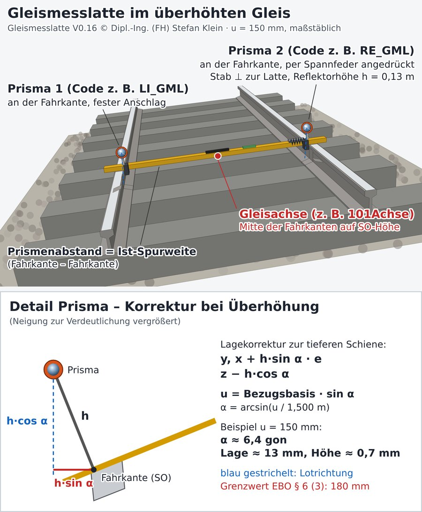
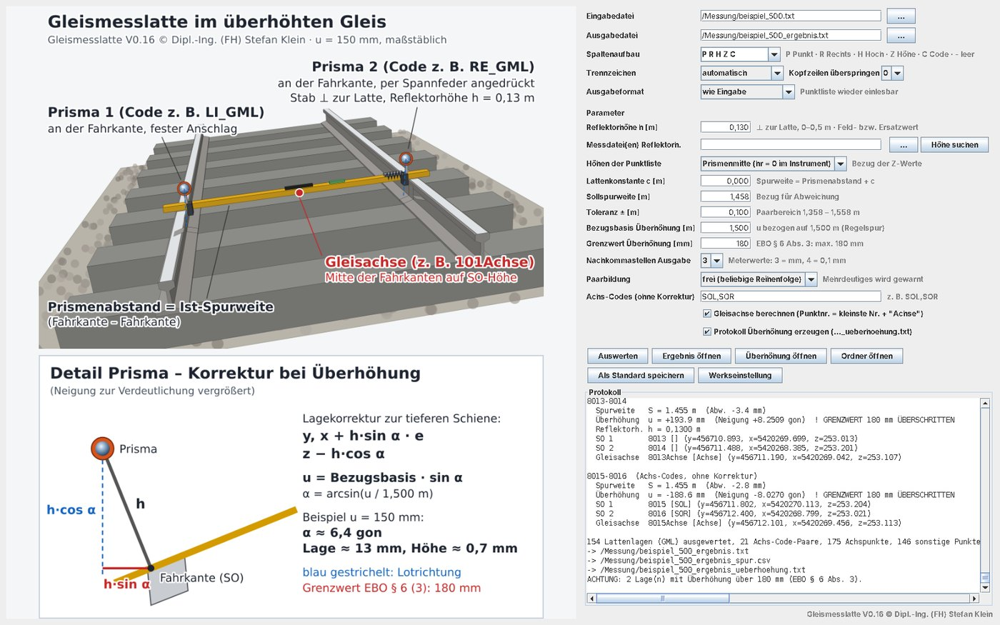
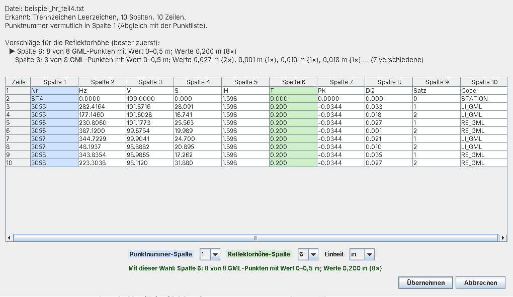

Gleismesslatte – Spurweite, Überhöhung und Gleisachse aus Tachymetermessungen
Kostenloses Open-Source-Programm zur Auswertung von Gleisvermessungen mit einer Gleismesslatte mit zwei Prismen. Es korrigiert die Reflektorhöhe in überhöhten Gleisen und berechnet Fahrkanten, Ist-Spurweite, Überhöhung und Gleisachspunkte.
Version 0.16 · Java 17 · Windows, Linux, macOS · MIT-Lizenz · © Dipl.-Ing. (FH) Stefan Klein

Worum geht es?
Eine Gleismesslatte trägt zwei Prismen, die lotrecht zur Latte montiert sind. Ein Prisma liegt mit einem festen Anschlag an der inneren Fahrkante der einen Schiene an. Das andere wird über eine Spannfeder an die Fahrkante der anderen Schiene gedrückt. Der Prismenabstand entspricht so der Ist-Spurweite.
In überhöhten Gleisen steht die Latte schräg. Die Prismen sitzen dann um die Reflektorhöhe senkrecht zur Latte versetzt. Die gemessenen Koordinaten liegen deshalb neben und über der Fahrkante. Bei 100 mm Überhöhung und 0,13 m Reflektorhöhe beträgt der seitliche Versatz bereits 8,7 mm. Das Programm rechnet diese Fehlstellung heraus.
Funktionen
Korrektur der Reflektorhöhe
Die Prismenpunkte werden auf die Fahrkante zurückgerechnet. Das gilt auch für Höhen, die im Instrument bereits lotrecht um hr reduziert wurden.
Spurweite
Das Programm berechnet die Ist-Spurweite und ihre Abweichung von der Sollspurweite. Paare werden nur innerhalb von Sollspurweite ± Toleranz gebildet (Standard 1,458 m ± 0,10 m).
Überhöhung und EBO
Die Überhöhung bezieht sich auf 1,500 m. Jede Lage wird gegen den Grenzwert von 180 mm nach EBO § 6 Abs. 3 geprüft. Ein Protokoll mit Rampenneigung lässt sich zuschalten.
Gleisachse
Für jede Lattenlage entsteht ein Achspunkt mit der Nummer „kleinste Punktnummer + Achse“.
Erkennung über den Code
Punkte mit „GML“ als Präfix oder Suffix werden korrigiert. Für frei wählbare Codes wie SOL und SOR (Gleismessstab) wird die Achse ohne Korrektur berechnet.
Reflektorhöhe aus Rohdaten
Die Höhe je Punkt wird aus Leica GSI, Trimble JobXML, LandXML oder Text-Tabellen gelesen. Bei Text-Tabellen erkennt das Programm die Spalte selbst.
Programmfenster


Eingelesen werden CSV-Dateien oder Text mit Leerzeichen bzw. Tab. Die Spaltenfolge ist einstellbar (Standard: Punktnummer, Rechtswert, Hochwert, Höhe, Code), ebenso 0–5 Kopfzeilen. Die Ergebnisdatei hat dasselbe Format wie die Eingabe und lässt sich wieder einlesen.
Rechenweg
Gegeben sind die beiden gemessenen Prismenpunkte P1 und P2 einer Lattenlage und die Reflektorhöhe h:
| Größe | Formel |
|---|---|
| Querneigung der Latte | sin α = Δz / |P2 − P1| |
| Normale der Latte, nach oben | n = (−sin α · eh | cos α), mit eh = waagerechte Richtung P1 → P2 |
| Fahrkantenpunkt | Fi = Pi − h · n |
| Spurweite | |F2 − F1| + c |
| Überhöhung | u = 1,500 m · sin α |
| Gleisachse | A = (F1 + F2) / 2 |
Die Normale n ist genau der Anteil des Lots, der senkrecht zur Latte steht: n = (k − (k·e)·e) / |k − (k·e)·e| mit k = (0 | 0 | 1). Hat das Instrument die Reflektorhöhe schon lotrecht abgezogen, gilt F = D + h · k − h · n.
Wichtig: Der Höhenbezug muss zur Einstellung im Instrument passen. Bei hr = 0 wählt man „Prismenmitte“, bei eingetragener Reflektorhöhe „lotrecht reduziert“.
Download und Start
- Unter Releases die Datei
Gleismesslatte_V0.16_Windows.zipherunterladen und entpacken. Gleismesslatte.exestarten. Dafür ist Java 17 oder neuer nötig, z. B. Eclipse Temurin.- Die Messdatei ins Fenster ziehen, die Reflektorhöhe prüfen und auf Auswerten klicken.
Auf anderen Betriebssystemen startet man das Programm mit java -jar Gleismesslatte.jar.
Für Stapelverarbeitung gibt es eine Konsolenversion. Beispieldaten mit 500 Punkten und Sollwerten
liegen dem Paket bei.
Den Quellcode gibt es als fertiges Eclipse-Projekt auf GitHub. Er kommt ohne externe Bibliotheken aus und enthält einen Selbsttest.
Lizenz und Haftung
Das Programm ist Open Source unter der MIT-Lizenz. Nutzung, Änderung und Weitergabe sind frei, auch kommerziell.
Es wird ohne Gewährleistung bereitgestellt und ist kein zugelassenes Prüf- oder Abnahmemittel. Die Ergebnisse sind fachkundig zu prüfen. Fehler und Vorschläge bitte über GitHub Issues melden.